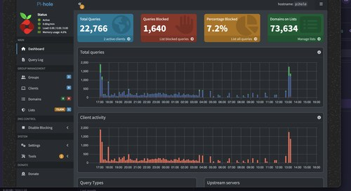
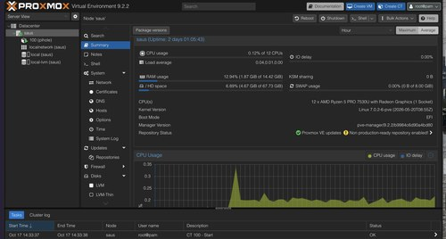

- October 17, 2026
- Log 1
- Projects
First Proxmox server



Took some time making this server the other day, I had an extra. think pad lying around and thought to myself "what would happen if I made my own server?" Well to my suprise a lot. When you figure out that you may need an ethernet cord to keep your crap together, and prevent your first pihole from dropping everything that comes through your DNS just because; then this is the starting place that I will be at for a week or maybe a month figuring out how to prevent that issue from ever happening again.